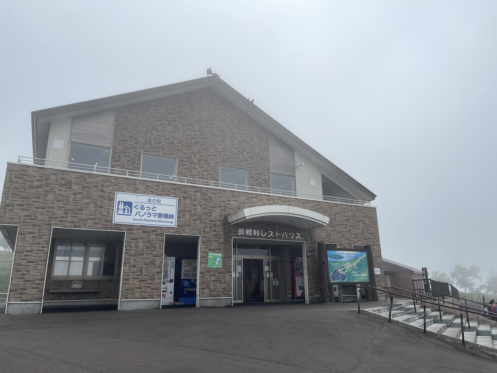
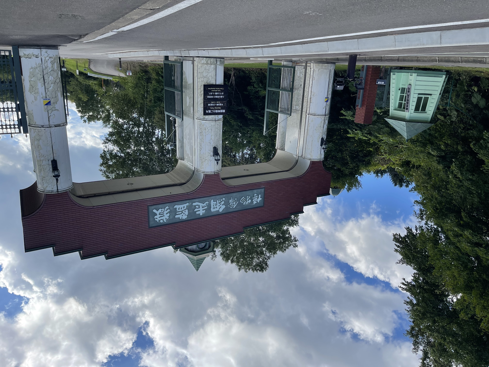
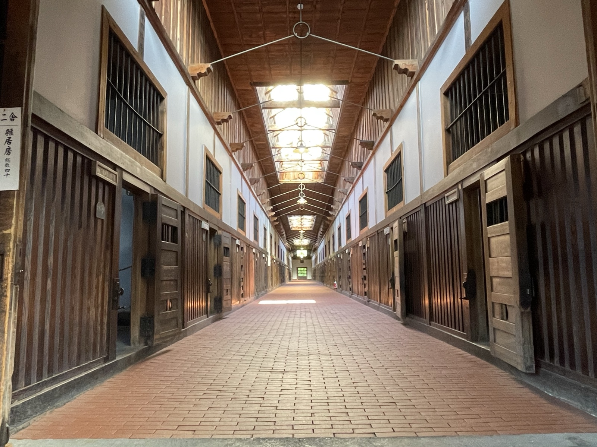
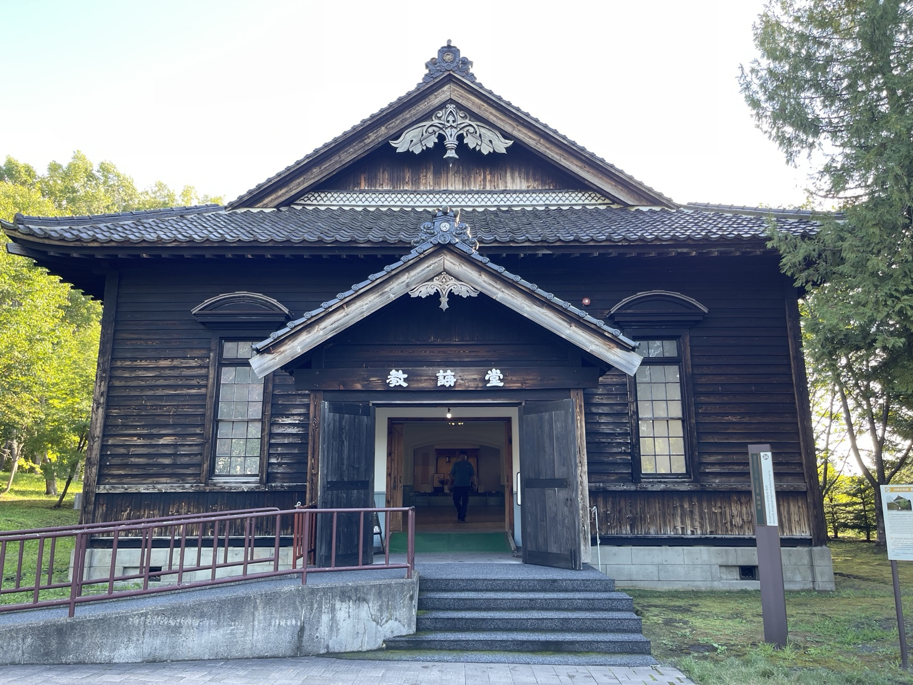

小清水町を出発。今日は神の子池、美幌峠、博物館網走監獄と盛りだくさんなルートだ。
神の子池 — ヒグマの気配に震える
斜里町の山中にある神の子池は、摩周湖の伏流水が湧き出す神秘的な池だ。透明度が高く、コバルトブルーの水の底に倒木が沈んでいる。ネットで写真を見て、ぜひ実物を見たいと思っていた場所だ。
ただし、アクセスは未舗装の林道。入口に着いた瞬間、なんとなく「獣の気配」みたいなものを感じた。気のせいかもしれないが、落ち着かない。しかも林道の中を観光客（中国人のグループ）が歩いていて、ヒグマ対策どうしているのか余計に不安になった🐻

池に着いてしまえば絶景だった。水が透明すぎて、底の倒木が水面直下に浮かんでいるように見える。色は曇り空でもしっかりブルーで、晴れた日はさぞ鮮やかだろう。短い滞在だったが、来てよかった。
美幌峠 — 霧の中のパノラマ
神の子池を後にして、いったん南へ下って美幌峠へ。屈斜路湖を見下ろせる展望台として有名なスポットだが、着いたときは濃い霧の中だった。

残念ながら湖は見えなかったが、霧の中の峠道はそれはそれで雰囲気があった。道の駅で休憩して、北上して網走へ。
博物館網走監獄 — 開拓と囚人の歴史
美幌峠を下りて北へ、博物館網走監獄へ。名前だけは知っていたが、実際に行くのは初めてだ。明治時代、北海道開拓のために囚人が道路建設に駆り出された歴史があり、ここはその網走刑務所の建物を移築・復元した野外博物館だ。

敷地に入ると、まず目を引くのが雑居房（房舎）。木造の長屋のような建物の中央に通路が伸び、両側に房がずらりと並ぶ。当時の囚人たちはここで集団生活を送っていた。中央の天窓から差す光が妙に明るくて、空間の緊張感を引き立てている。

奥には教誨堂と釧路地方裁判所網走支部の建物が移築されている。明治の木造建築の美しさと、ここで説教を聞いたり判決を受けたりした人たちのことを思うと、複雑な気持ちになる。


当時の道路建設がいかに過酷だったか、国道39号線（中央道路）がどのように作られたか——ここで初めて知った。網走から旭川まで続く中央道路は、囚人の労働で切り開かれた道だ。今も現役で走っているあの道に、そういう歴史があるとは思っていなかった。
見学を終えて、今日の宿のある紋別へ向かう。